To get a sense of how these inscribed stars behave, we created a collection of MATLAB simulations that can trace these inscribed stars. The source code can be accessed from the following link:
MATLAB Source CodeThese simulations can illustrate some of the interesting behavior and phenomena that these inscribed stars exhibit, in a variety of cases. In what follows, we include a few animated examples of inscribing a star (blue) into a regular polygon (black) parameterized by a moving basepoint (red). In some of the animations and plots, there is noise that is derived from the limited resolution of the simulation.
In this case, every inscribed star is both equilateral and equiangular. That is, the inscribed star for every basepoint is similar to every other. Here we also get very simply explicit formulas for the locations of vertices of each star, which allows us to compute the side length function explicitly. We find that this side length function takes on a simple (almost) parabolic shape.
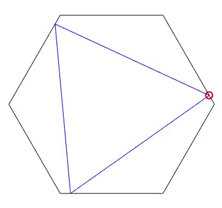
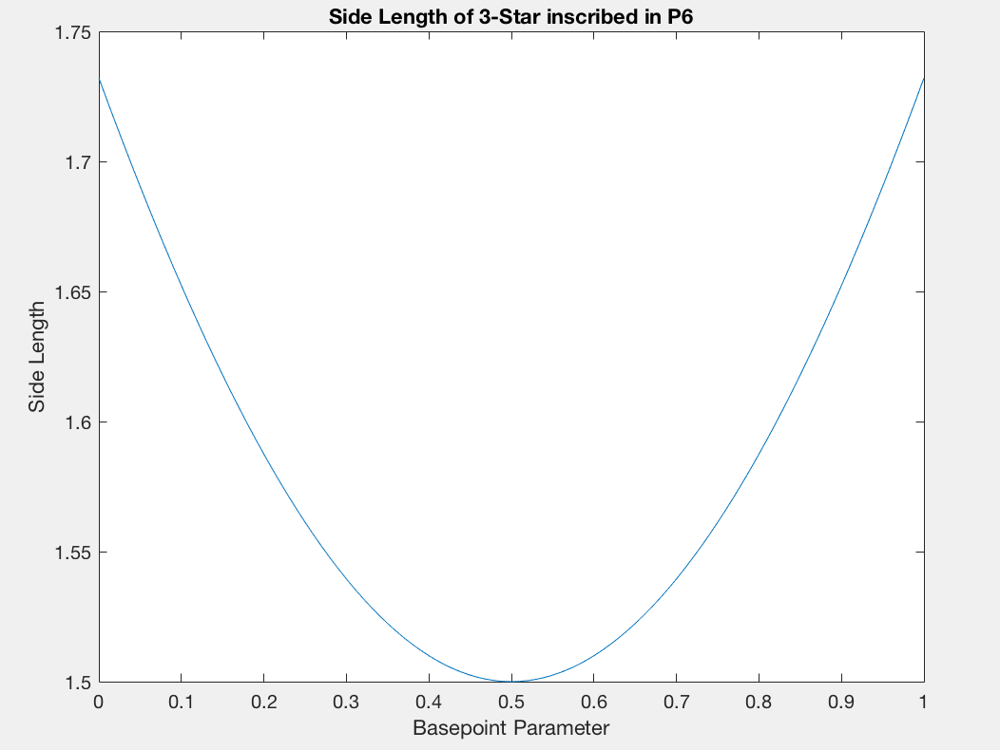
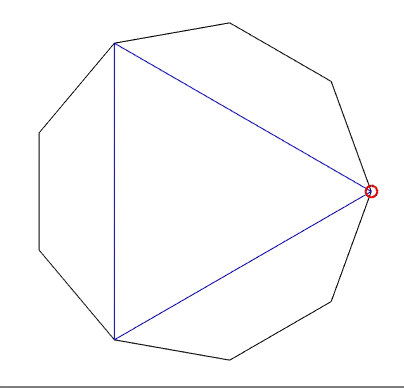
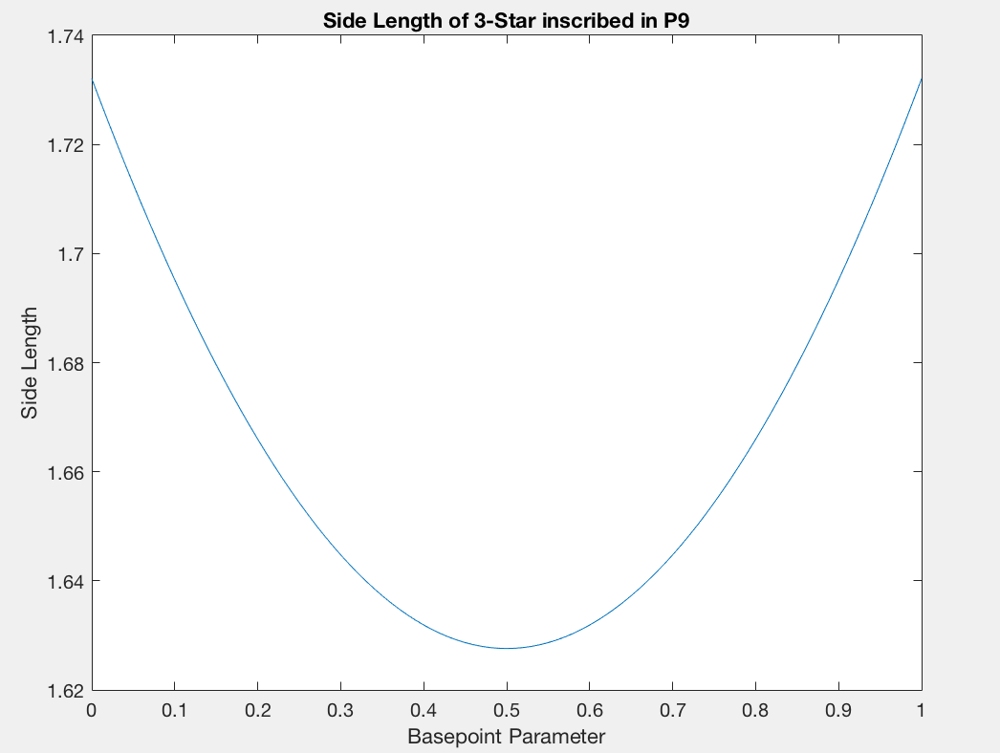
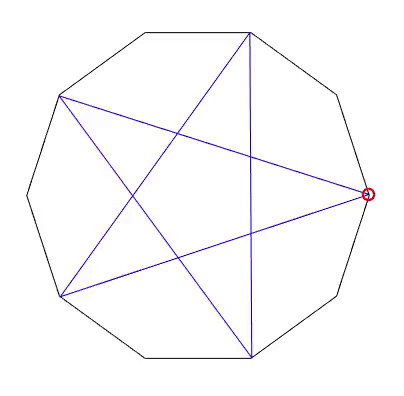
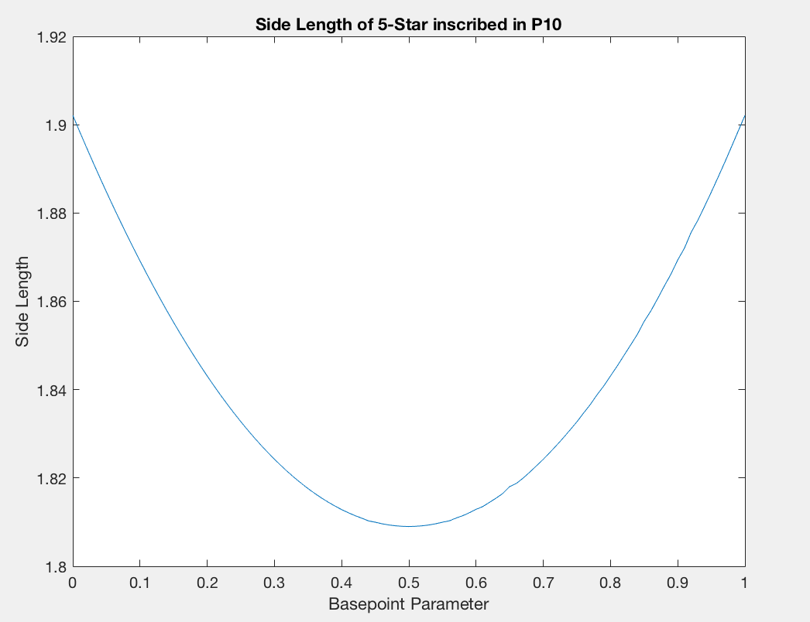
In this case where n is one away from a multiple of 2l+1, we can observe some interesting phenomena. The inscribed stars are no longer necessarily equiangular, and the resulting side length plot takes on a piecewise parabolic shape. Also, the animations show that the inscribed stars have an odd tendency "breathing" while the move.
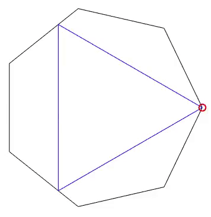
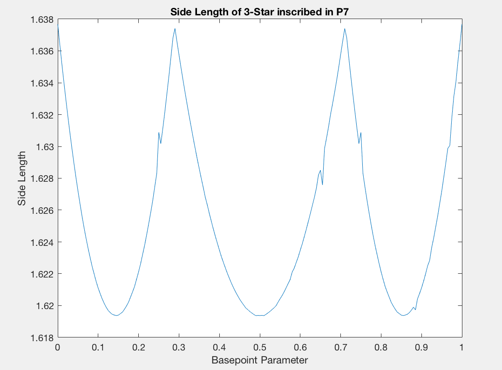
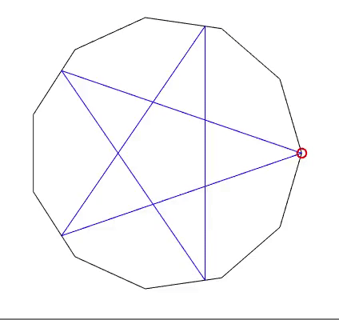
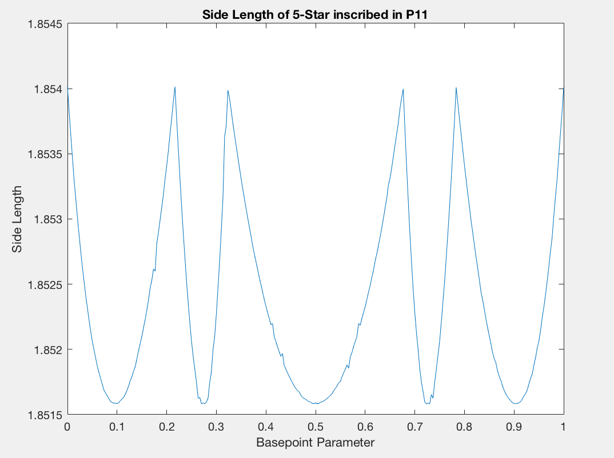
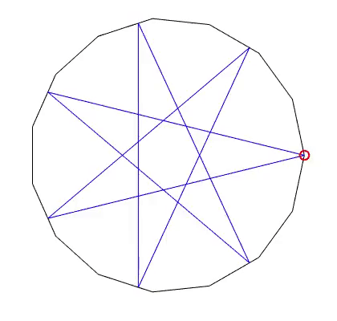
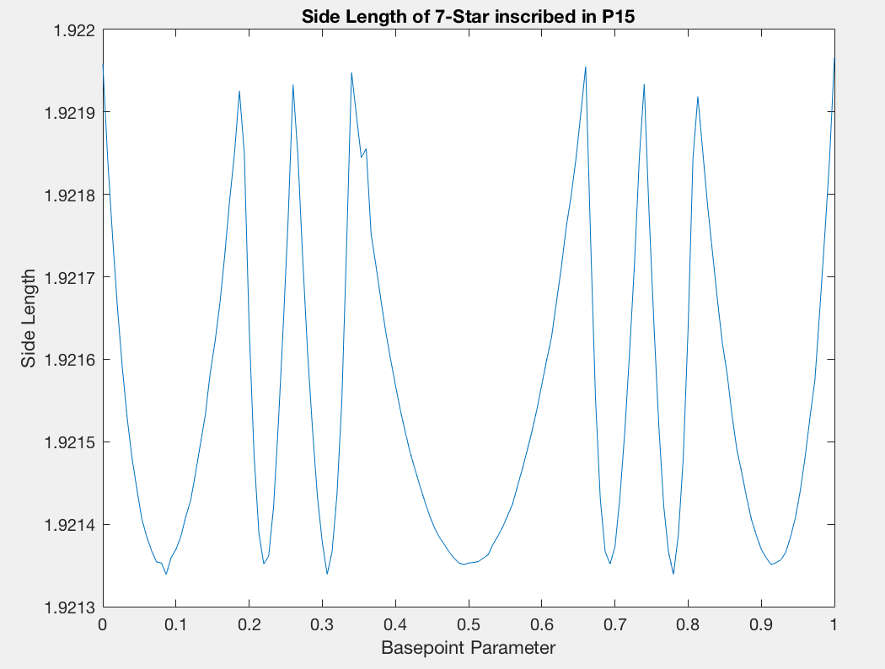
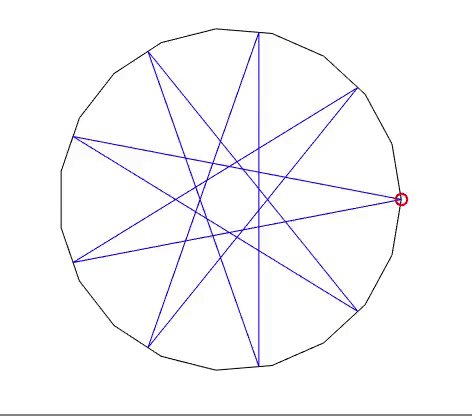
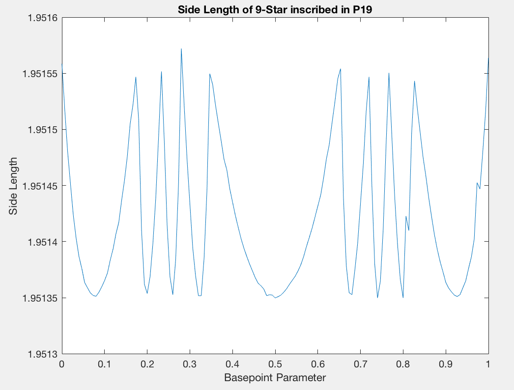